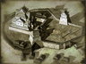
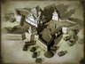

Requires
- Buildings: 
Enables
- Buildings: 
- Units:


Spawned Garrisons
Basic Building Statistics (can be modified by difficulty level, arts, skills, traits and retainers)
- Cost: 11000
- +20% increase in resistance to naval bombardment
- Recruitment capacity (units in training): +1
- +8 to repression in this province
Description
The power of great men casts a long shadow.
A citadel is the power of an overlord represented in stone and military might, and a reminder that dissent and discontent among the people carry terrible risks. It acts as a focus for military activities in a province, and helps recruitment. By the end of the Sengoku Jidai, castles had grown into magnificent palaces as well as fortifications. With the peace imposed by the Tokugawa Shogunate, there was no need for further castle building, although existing structures continued to show off the prestige and wealth of the great families. Toyotomi Hideyoshi's fortress at Himeyama is one such citadel that survived war and peace, a complete rebuilding by Hideyoshi's son-in-law, and the Meiji Restoration. Today it is a spectacular tourist attraction, one of the great fortress-palaces of Japan.